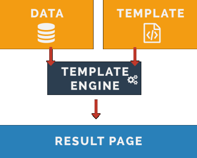
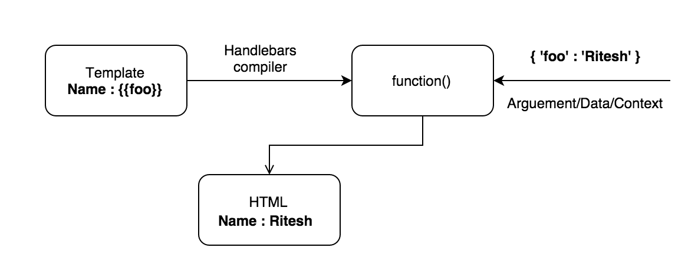

1. Вступ
Шаблонізація (templating) — метод зв'язування даних і розмітки. Зручний спосіб генерації HTML за шаблоном і даними. Використовується на клієнті і сервері.
Суть шаблонізації полягає в тому, щоб відокремити опис HTML від логіки. Розмітка поміщається в окремі файли (шаблони), а в місцях, де необхідно вивести дані, розміщуються спеціальні псевдозмінні. JS-код завантажує потрібний шаблон і замінює в ньому псевдозмінні на відповідні дані.
На звичайних сайтах, де HTML і CSS вже є, елементи інтерфейсу отримують готовий DOM і використовуючи JavaScript вішають обробники, оживляючи його. Але в складних інтерфейсах розмітка спочатку відсутня на сторінці. DOM створюється за допомогою JavaScript-коду, динамічно, на основі даних, отриманих з сервера або з інших джерел.
Уявіть список постів на веб-сторінці, а так само будь-які інші ситуації, які вимагають відображення колекції однотипних елементів, але з різними даними.
Дані для постів приходять від сервера, як масив об'єктів, у нас є шаблон одного поста. Використовуючи цикл ми можемо пройтися по масиву об'єктів і викликати функцію-шаблон для кожного об'єкта, результатом буде рядок з підставленими даними. Після чого ми в контейнер для постів просто повісимо рядок і браузер створить розмітку.
Це стандартний підхід написання динамічних елементів інтерфейсу, дані для яких змінюються з часом.
1.1. Використання шаблонізації
Весь процес вимагає декількох простих кроків:
- Наявність даних якими буде наповняться елемент інтерфейсу
- Шаблон за яким буде складена розмітка елемента
- Бібліотека, яка надає кошти шаблонізації

Ми детально розглянемо це на прикладах, але по суті це це дуже просто:
- Підключити до проєкту обрану бібліотеку для шаблонізації
- Скласти HTML-шаблон необхідного виду
- Зробити вибірку шаблону в JS-файлі
- Провести рендеринг шаблону разом з даними
2. Шаблон
Шаблон — це рядок в спеціальному форматі, який шляхом підстановки значень і виконання вбудованих фрагментів коду перетворюється в HTML.
Синтаксис шаблону залежить від бібліотеки, найважливіше це розуміти принцип роботи шаблонізаторів. Ми будемо використовувати бібліотеку Handlebars.
2.1. Синтаксис
Шаблон - це рядок зі спеціальними роздільниками, яких в Handlebars всього три:
<div>{{expr}}div>
<div>{{{expr}}div>
<div>{{#helper}}{{/helper}}div>
Тобто синтаксис Handlebars - це звичайний HTML, з вставками виду {{...}}.
Саме в ті місця де вказані вставки, будуть поміщені дані.
<div class="menu">
<h3 class="menu-title">{{title}}h3>
<ul class="menu-list">
{{#each items}}
<li class="menu-item">{{this}}li>
{{/each}}
ul>
div>
2.2. Методи зберігання
Шаблон - це просто багаторядковий HTML-текст, йому не місце в файлі скриптів.
Один із способів - записати його в HTML-файлі, в тег template.
Більш сучасний спосіб, наприклад при використанні
Webpack, зберігати шаблон в окремому файлі і імпортувати його. Для цього в
конфігурацію Webpack потрібно додати
завантажувач Handlebars-шаблонів.
Зовнішні шаблони мають багато переваг, головним чином в тому, що шаблони ніколи не будуть завантажуватися клієнту, якщо вони не потрібні на сторінці. Для засвоєння ключових концепцій, будемо користуватися вбудованими шаблонами.
Обгорнімо шаблон в тег template і дамо йому унікальний ідентифікатор, щоб
можна було вибрати в JS-файлі по селектору.
<template id="menu-template">
<div class="menu">
<h3 class="menu-title">{{title}}h3>
<ul class="menu-list">
{{#each items}}
<li class="menu-item">{{this}}li>
{{/each}}
ul>
div>
template>
3. Використання шаблону
Повернемося до перерахованих кроків, де ми описали послідовність дій необхідних для використання шаблонізації, і розберемо по пунктах.
3.1. Додати в проєкт бібліотеку
Підключення бібліотеки в проєкт відбувається дуже просто. Є кілька варіантів.
- Завантажити файл бібліотеки і підключити його в
index.html - Використовувати CDN-сервіс для отримання посилання на файл бібліотеки
- Якщо використовується інструмент на кшталт
Webpack, можна ставити бібліотеку як npm-пакет
Поки що використовуємо CDN. В розділі
документації про встановлення
бібліотеки, є посилання на CDN-сервіс на якому можна скопіювати необхідний URL.
Це мініфіцірована версія бібліотеки. Все що потрібно зробити - в index.html,
перед закриваючим тегом body і перед нашим файлом скриптів, додати ще один тег
script.
<script src="https://cdnjs.cloudflare.com/ajax/libs/handlebars.js/4.0.11/handlebars.min.js">script>
3.2. Скласти HTML шаблон
Цей крок ми виконали вище і у нас вже є повністю готовий шаблон для меню. Додамо його перед усіма скриптами в документі.
<body>
<template id="menu-template">
<div class="menu">
<h3 class="menu-title">{{title}}h3>
<ul class="menu-list">
{{#each items}}
<li class="menu-item">{{this}}li>
{{/each}}
ul>
div>
template>
<script src="https://cdnjs.cloudflare.com/ajax/libs/handlebars.js/4.0.11/handlebars.min.js">script>
<script src="js/scripts.js">script>
body>
3.3. Зробити вибірку шаблону в скрипті
template це тег, значить ми можемо вибрати його по селектору тега / класу /
ідентифікатора. Доброю практикою вважається давати тегам template, що містить
шаблон, ідентифікатори, оскільки вони унікальні.
Тепер в JS-файлі ми можемо по id вибрати сам тег template і його контент в
вигляді рядка, для цього використовуємо властивість innerHTML.
const source = document.querySelector('#menu-template').innerHTML.trim();
Посилання на приклад в Codepen.io
3.4. Відрендеріть шаблон з даними
У нас вже є бібліотека і шаблон з якого ми вилучили текстовий контент. Для
роботи з шаблоном в бібліотеці Handlebars є функція compile. Ця функція
запускає компіляцію шаблону source і повертає результат у вигляді функції, яку
далі можна запустити з даними і отримати рядок-результат.
Handlebars.compile(source)
Виклик Handlebars.compile(source) розбиває HTML-рядок по розділювачам і, при
допомозі new Function створює на її основі функцію. Тіло цієї функції
створюється таким чином, що код, який в шаблоні оформлений як {{...}} –
потрапляє в неї як є, а змінні і текст додаються до спеціального тимчасового
буферу, який в підсумку повертається.
const source = document.querySelector('#menu-template').innerHTML.trim();
const template = Handlebars.compile(source);
Посилання на приклад в Codepen.io

Тепер використовуючи функцію-шаблон template можемо передати їй дані як
аргумент і вона поверне HTML-рядок.
Для початку додамо дані для списку. У шаблоні вказані якісь змінні title і
items.
В реальних задачах спочатку створюються формати для даних, а потім під них пишуться шаблони, але для наочності ми для шаблону напишемо дані.
Дані для шаблону це що завгодно, рядок, об'єкт, масив і т.д., залежить від завдання, найчастіше об'єкт або масив об'єктів. Оскільки у нас список з заголовком і набором пунктів, нам зручно використовувати об'єкт такого виду.
const menuData = {
title: 'Eat it createElement, templates rule!',
items: ['Handlebars', 'LoDash', 'Pug', 'EJS', 'lit-html'],
};
Наступним кроком буде викликати функцію-шаблон і передати їй menuData як
аргумент. В результаті отримаємо рядок з підставленим значеннями, помістимо його
в тег і браузер, розпарсивши його, створить HTML-розмітку.
Посилання на приклад в Codepen.io
4. Шаблони і Webpack
Коли використовуємо складальник модулів, дуже зручно працювати з зовнішніми шаблонами.
Додаємо бібліотеку.
npm install handlebars
Додаємо завантажувач handlebars-loader.
npm install --save-dev handlebars-loader
Оновлюємо конфігурацію Webpack, додаючи налаштування завантажувача.
// В webpack.config.js
{
...
module: {
rules: [
...
{ test: /\.hbs$/, exclude: /node_modules/, use: "handlebars-loader" }
]
}
}
В папці src створюємо папку templates, в якій додаємо файли шаблонів з
розширенням .hbs. Для нашого меню це буде menu.hbs. Розміщуємо розмітку
шаблону в файл, без тега tempalte.
<div class="menu">
<h3 class="menu-title">{{title}}h3>
<ul class="menu-list">
{{#each items}}
<li class="menu-item">{{this}}li>
{{/each}}
ul>
div>
Там де хочемо використовувати шаблон, імпортуємо файл із шаблоном. Особливість в
тому, що при імпорті, handlebars-loader обробить файл шаблону і в
menuTemplate вже буде лежати скомпільована функція-шаблон готова до
використання.
// В app.js
import menuTemplate from '/path/to/templates/menu.hbs';
const menuData = {
title: 'Eat it createElement, templates rule!',
items: ['Handlebars', 'LoDash', 'Pug', 'EJS', 'lit-html'],
};
const markup = menuTempalte(menuData); // html розмітка з підставленими значеннями